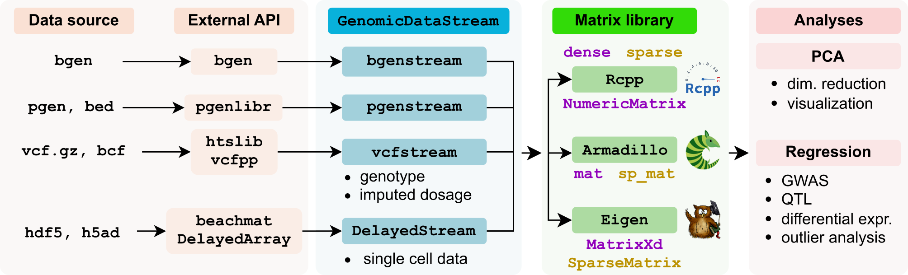

A scalable interface between genomic data and analysis underneath R

Reading genomic data files (VCF, BCF, BGEN, PGEN, BED, H5AD, HDF5, DelayedArray) into R/Rcpp in chunks for analysis with
The GenomicDataStream interface separates:
- data source
- streaming chunks of features into a data matrix
- downstream analysis
GenomicDataStream provides interfaces at both the C++ and R levels. The C++ interface prioritizes efficiency, while the R interface wraps the C++ backend for non-technical users.
See header-only C++ library documentation
Install
# Install latest version of GenomicDataStream
# and dependencies
BiocManager::install("GabrielHoffman/GenomicDataStream")Supported formats
Genetic data
| Format | Version | Support |
|---|---|---|
| BGEN | 1.1 | biallelic variants |
| BGEN | 1.2, 1.3 | phased or unphased biallelic variants |
| PGEN | plink2 | biallelic variants |
| BED | plink1 | biallelic variants |
| VCF / BCF | 4.x | biallelic variants with GT/GP fields, continuous dosage with DS field |
Single cell data
Count matrices for single cell data are stored in the H5AD format. This format, based on HDF5, can store millions of cells since it is designed for sparse counts (i.e. many entries are 0) and uses built-in compression. H5AD enables file-backed random access for analyzing a subset of the data without reading the entire file in to memory.
Key Dependencies
| Package | Ref | Role |
|---|---|---|
| vcfppR | Bioinformatics | C++ API for htslib |
| htslib | GigaScience | C API for VCF/BCF files |
| pgenlibr | GigaScience | R/C++ API for plink files |
| beatchmat | PLoS Comp Biol | C++ API for access data owned by R |
| DelayedArray | R interface for handling on-disk data formats | |
| Rcpp | J Stat Software | API for R/C++ integration |
| RcppEigen | J Stat Software | API for Rcpp access to Eigen matrix library |
| RcppArmadillo | J Stat Software | API for Rcpp access to Armadillo matrix library |
| Eigen | C++ library for linear algebra with advanced features | |
| Armadillo | J Open Src Soft | User-friendly C++ library for linear algebra |
Notes
GenomicDataStream provide flexability in terms of data input types and and matrix libraries. This can useful in many cases, but the large number of dependencies can require installation of additional libraries and increase compile times. Some of these dependencies can be avoided by removing support for some capabilities with compiler flags in Makevars:
-D DISABLE_DELAYED_STREAM
Omit DelayedStream class, remove dependence on Rcpp and beachmat
-D DISABLE_EIGEN
Omit support for Eigen matrix library, and remove dependence on RcppEigen and Eigen
-D DISABLE_RCPP
Omit support for Rcpp matrix library, and remove dependence on Rcpp
-D DISABLE_PLINK
Omit support for PLINK files (PGEN, BED), and remove dependence on pgenlibr
GenomicDataStream is written so that core functions are in C++17 with no dependence or R or Rcpp. On top of that, there is a thin wrapper that uses Rcpp to interface between R and the lower-level library.